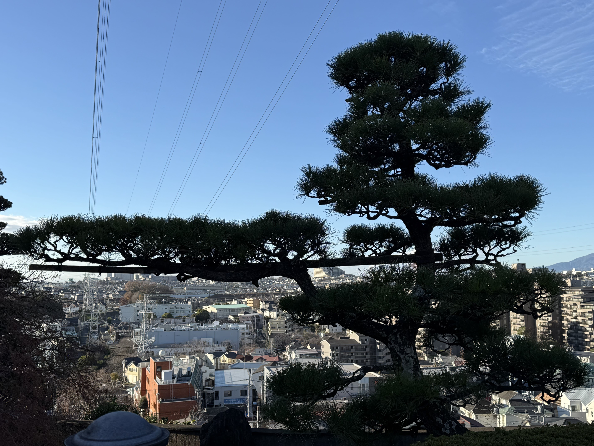
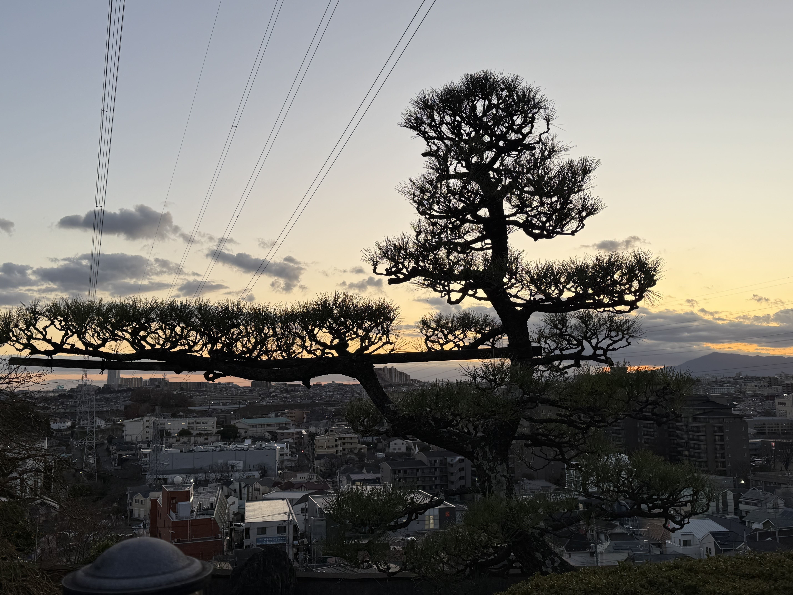
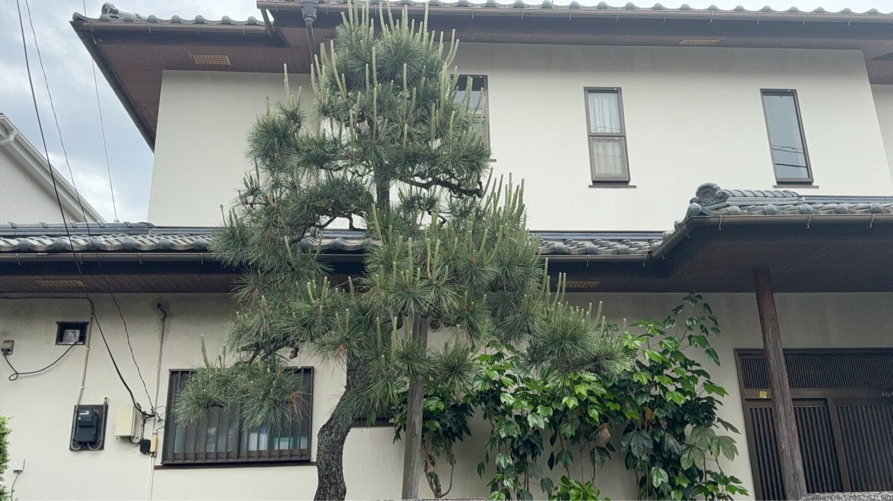
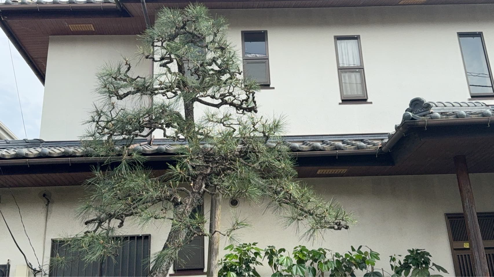
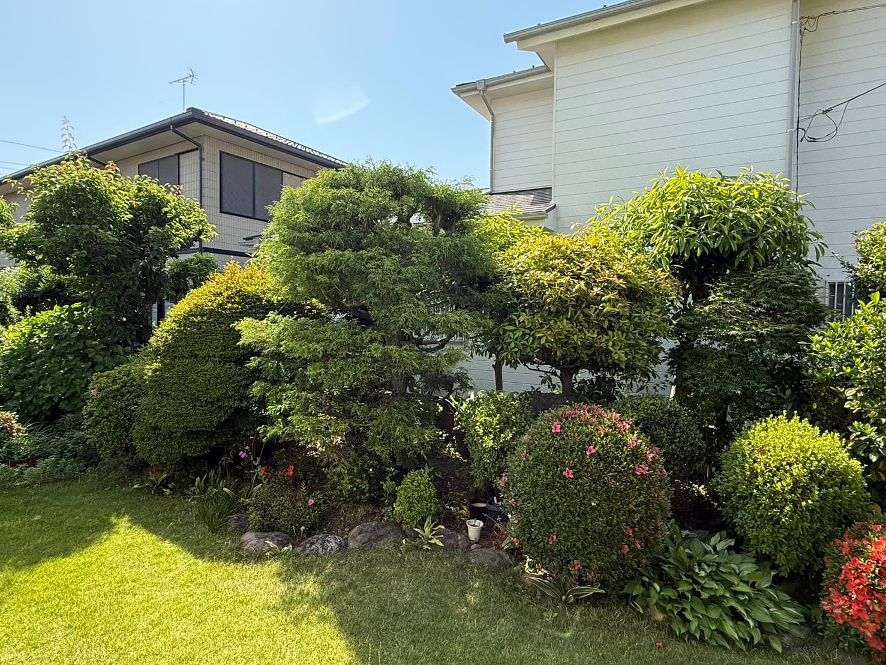
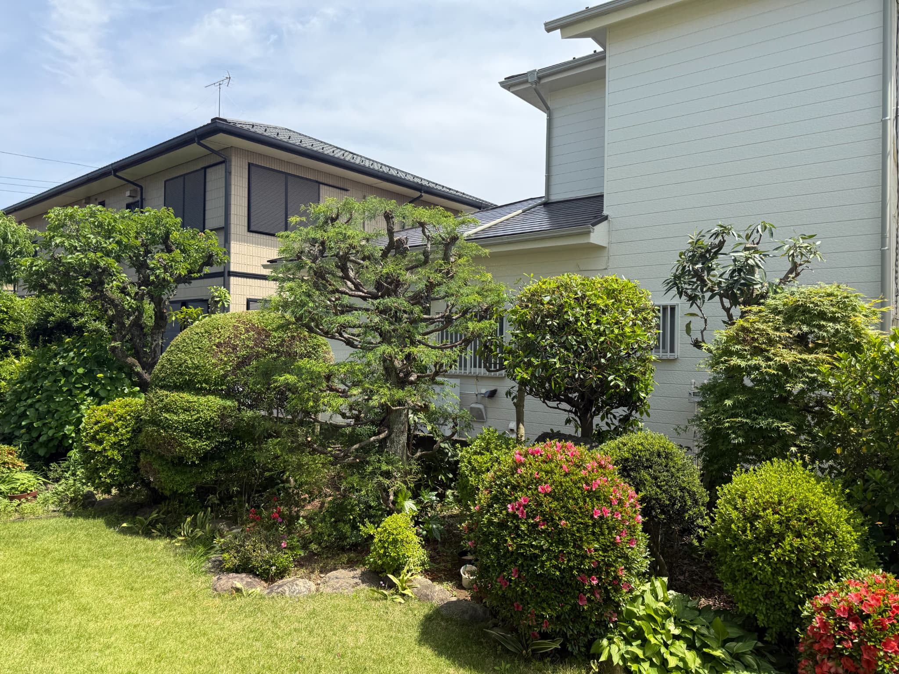
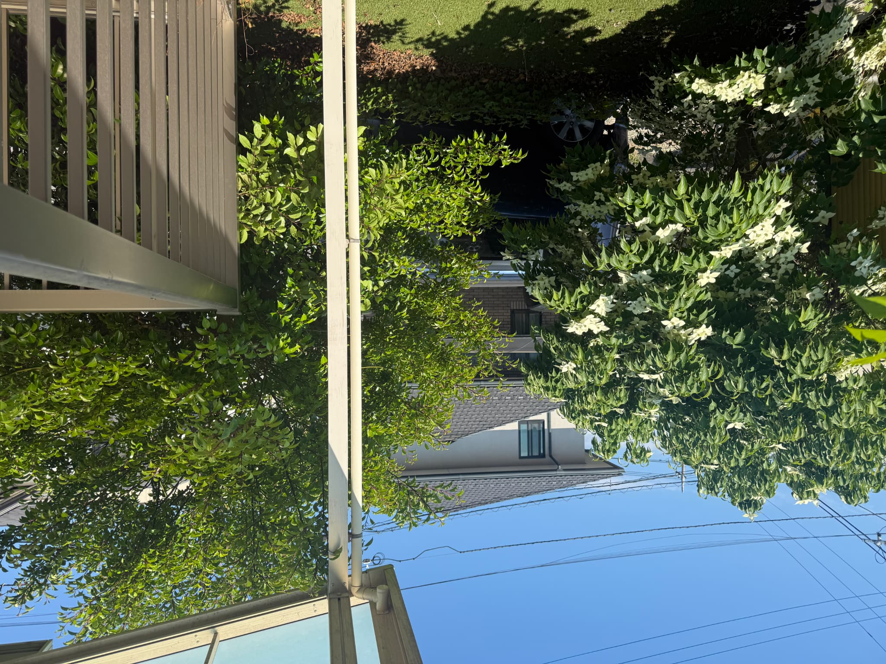
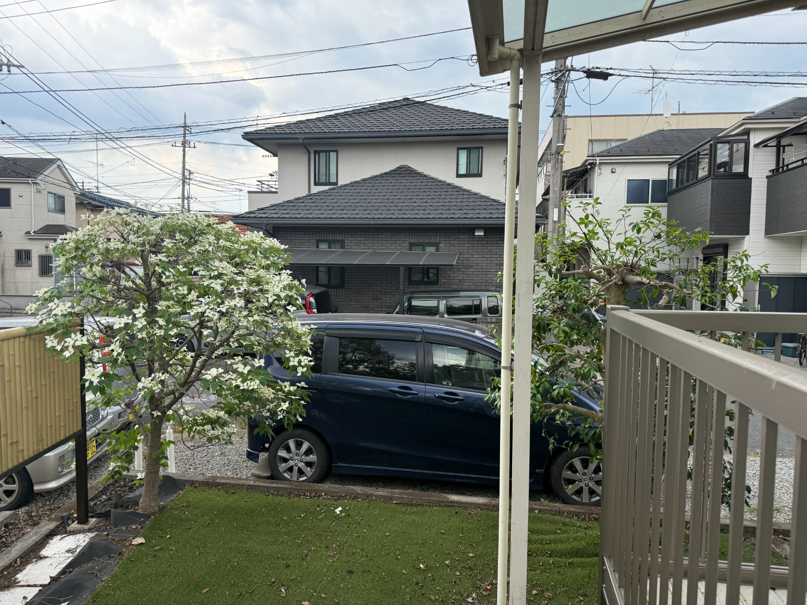
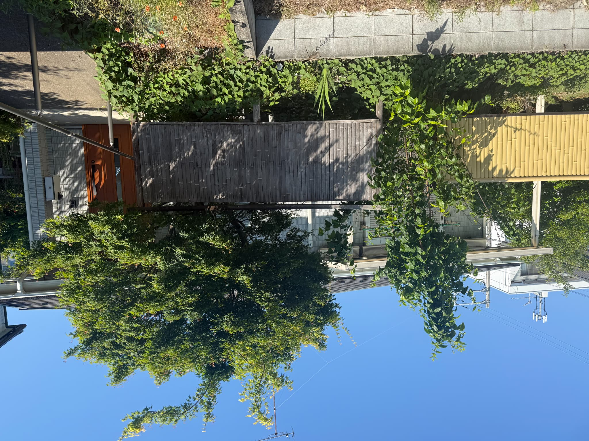
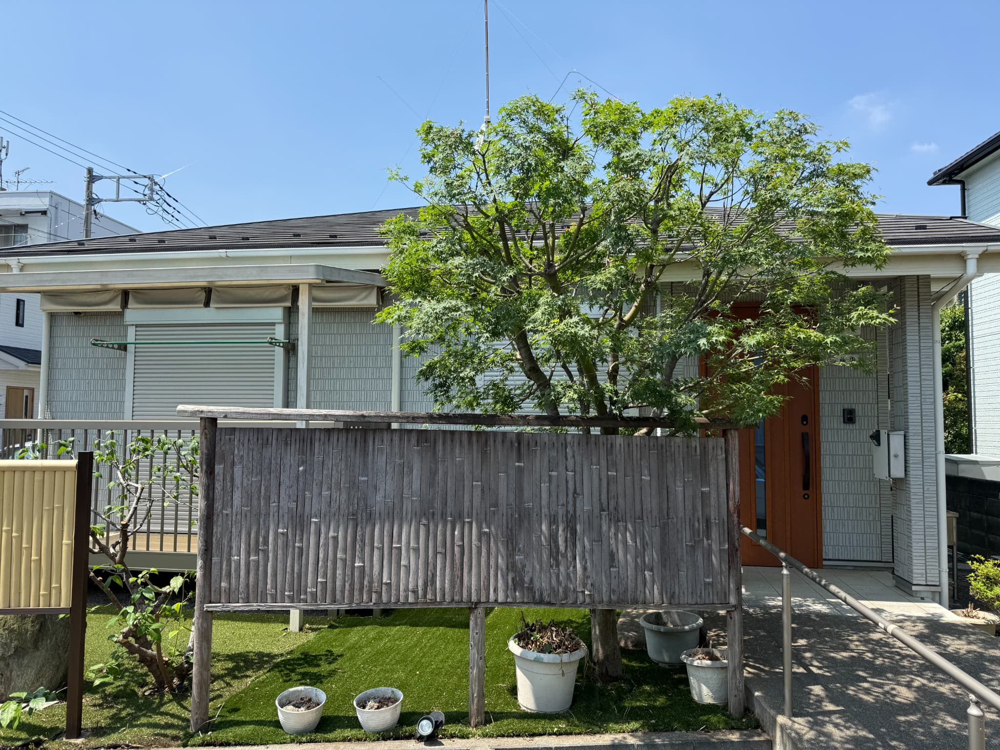

代表者あいさつ
事業内容
個人宅のお庭の手入れ
一本の剪定から、定期にお庭を整える管理までお任せください。
樹木伐採
大きくなりすぎた木の伐採や処分も承ります。
除草作業
手のかかる草刈り、草むしりを代行し、清潔なお庭を保ちます。
植栽（お庭造り）
お客様のご要望に合わせ、新しい木の植え付けや庭作りをいたします。
芝張工事
美しい緑の絨毯のようなお庭を実現するための芝張りを行います。
防草シート、砂利敷き等
雑草対策に。防草シート施工や砂利敷きでお手入れを楽にします。
施工事例
職人の技が光る 剪定・お手入れ事例
マツの木の剪定
日当たりと風通しをしっかりと考慮し、不要な枝を一本一本丁寧に取り除いて、マツ本来の美しさが際立つスッキリとした姿に整えました。

作業前（Before）
作業後（After）マツの木の剪定
基本は年2回（春・冬）行うマツの剪定ですが、年1回（春先）の作業だけでも十分に綺麗なお庭をキープできます。

作業前（Before）
作業後（After）お庭全体の植木剪定・お手入れ
お庭全体の植木をバランスよくコンパクトにまとめ、圧迫感が出ないよう適度に枝を透かす作業を行いました。スッキリと開放感のあるお庭に仕上げています。

作業前（Before）
作業後（After）ヤマボウシとクロガネモチの木の剪定
ちょうど美しいお花が咲いている時期でしたので、花の付き方や全体のバランスを見極めながら、見栄え良く上品に仕立て上げました。

作業前（Before）
作業後（After）モミジとロウバイの木の剪定と除草作業
玄関前で大きく伸びていた庭木を剪定し、風通しよく軽やかなシルエットに仕立て直しました。合わせて除草作業も行うことで、お庭全体が見違えるほどスッキリと綺麗に生まれ変わりました。

作業前（Before）
作業後（After）料金表（目安）
0〜3m未満
3m〜4m未満
4m〜5m未満
5m〜7m未満
※2階 of 屋根がおよそ7.5m〜9mの目安となります。
庭木・生垣のお手入れ
※料金はすべて税抜き価格です。
| 作業内容 ＼ サイズ | ～3m未満 | 3m～4m未満 | 4m～5m未満 | 5m～7m未満 |
|---|---|---|---|---|
| 剪定作業 （1本あたり） |
4,000円 | 8,000円 | 15,000円 | 20,000円 |
| 樹木伐採 （1本あたり） |
3,000円 | 5,000円 | 8,000円 | 15,000円 |
| 消毒作業 （1本あたり） |
3,000円 | 5,000円 | 8,000円 | 15,000円 |
| 作業内容 ＼ サイズ | ～1m未満 | 1m～2m未満 | 2m～ |
|---|---|---|---|
| 生垣刈込 （1mあたり） |
1,000円 | 2,000円 | 3,000円 |
※作業で発生した枝葉・草の処分費は別途頂戴いたします。詳細は下部の「剪定枝・刈草の処分費用」をご参照ください。
※マツやマキ等の仕立物は別途料金が加算されますのでお見積りを致します。
※高さ7mを超える木につきましては、別途お見積りにて対応させていただきます。
草刈り・お庭の各種工事
| 作業内容 | 施工方法 / 区分 | 料金（税抜き） |
|---|---|---|
| 除草作業 （1㎡あたり） |
機械施工（草刈機など） | 500円 |
| 人力草取り（手抜き） | 1,500円 | |
| 芝張作業 （1㎡あたり） |
標準施工（一律） | 3,000円 |
| 防草シート施工 （1㎡あたり） |
標準施工（一律） | 3,000円 |
| 砂利敷き作業 （1㎡あたり） |
標準施工（一律） | 10,000円 |
※作業で発生した枝葉・草の処分費は別途頂戴いたします。詳細は下部の「剪定枝・刈草の処分費用」をご参照ください。
※伐根をご希望の場合、現地の状況によっては対応可能です。まずはお気軽にご相談ください。
剪定枝・刈草の処分費用
当社では、作業時に発生した枝葉や草の処分を、すべて軽トラックでの搬出にて承ります。
※ゴミの袋詰め作業（ビニール袋等への袋詰め）は行っておりません。トラックへのダイレクト積込み・搬出となります。
| 積載量の目安 | 料金（税抜き） |
|---|---|
| 軽トラック 1/4 程度 | 3,000円 |
| 軽トラック 1/2 （半分）程度 | 6,000円 |
| 軽トラック 1台分 （満載） | 12,000円 |
※剪定・伐採・除草などの各作業費とは別に、こちらの処分費・諸経費をあわせたものが総額のお見積りとなります。
ご依頼の流れ
お問い合わせ
まずはお気軽にお電話ください。
無料お見積り
現地を確認し、最適なプランを提案します。
作業開始
お留守でも構いません。
さとう○うえきにお任せください。
お支払い
作業完了後の後払いでOKです。
お客様の声
「長年放置していた木を綺麗にしていただきました。不在の間にお願いしましたが、後片付けまで完璧でした！」（相模原市 A様）
「電話の対応がとても丁寧で、見積もりもすぐ出してくれました。またお願いしたいです。」（相模原市 B様）
保有資格
| 資格名称 | 取得年月日 | 修了証番号 |
|---|---|---|
| 危険物取扱責任者 | 1991.07.15 | 第05457号 |
| 車両系建設機械 | 1993.05.17 | 第93073号 |
| １級造園施工管理技士 | 1998.03.26 | 第97131205号 |
| １級造園技能士 | 2000.10.06 | 第00-1-062-11-0023号 |
| 小型移動式クレーン | 2001.10.18 | 第4311329号 |
| 高所作業車 | 2001.11.16 | 第4300754号 |
| 玉掛 | 2001.12.05 | 第4321236号 |
| 安全衛生責任者 | 2002.09.03 | 第531号 |
| 刈払機取扱作業者 | 2002.09.06 | 第4300124号 |
| 監理技術者 | 2004.02.18 | 第00612214号 |
| 街路樹剪定士 | 2008.11.20 | 08－神奈川-038 |
| 伐木 | 2012.04.28 | 第67890号 |
| ﾌﾙﾊｰﾈｽ型安全帯使用作業 | 2019.04.13 | 第006756号 |
会社案内
| 社名 | さとう○うえき |
|---|---|
| 代表 | 佐藤 誠 |
| 創業年月日 | 2015年5月25日 |
| 住所 | 〒252-0227 神奈川県相模原市中央区光が丘 （詳細はお見積り時にお伝えいたします） |
| 電話番号 | 090-8515-3164 |
| メール | satou.ueki@gmail.com |
| 適格請求書発行事業者登録番号 | T4810808884234 |
| 主な実績 | 個人邸 100件以上 / マンション・病院等 50件以上 ※地域に根ざして10年以上、多くの現場を任せていただいております。 |